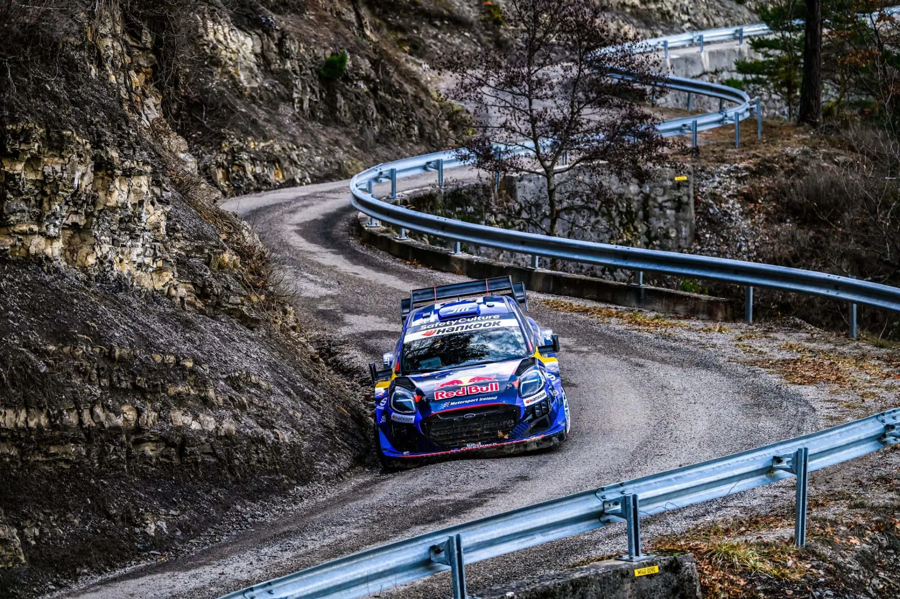
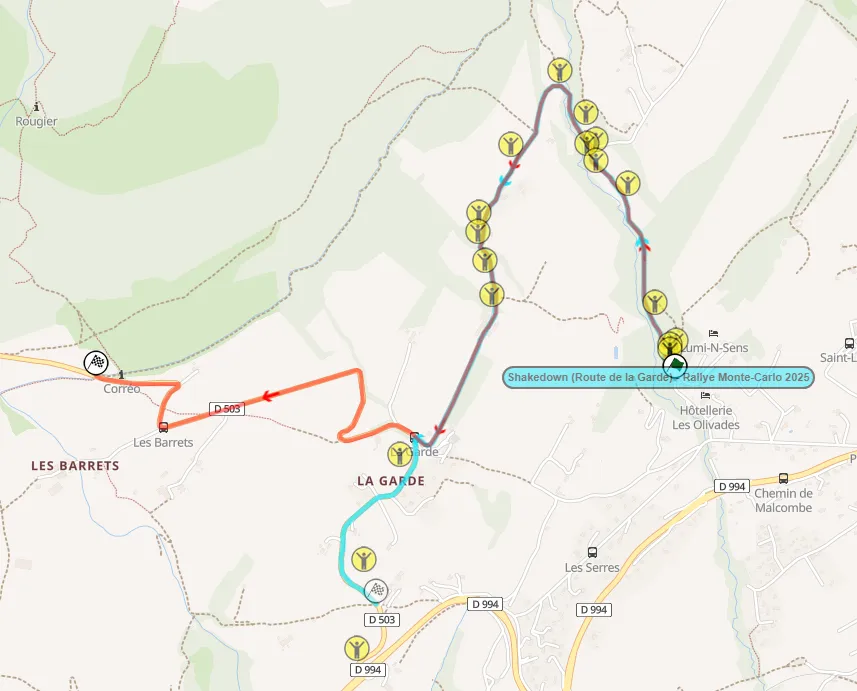
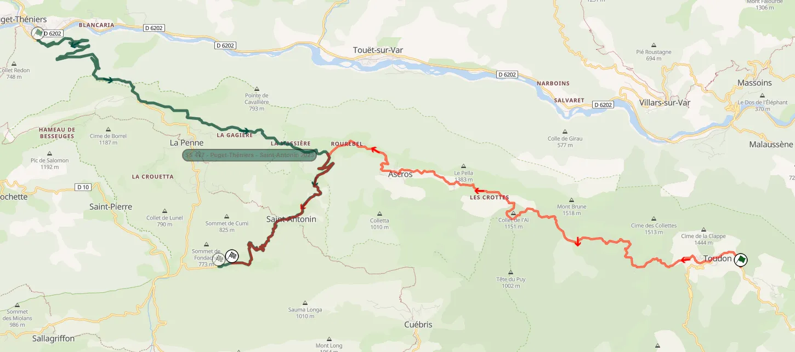
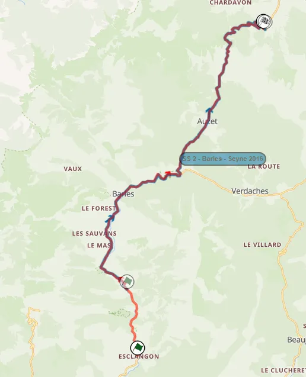
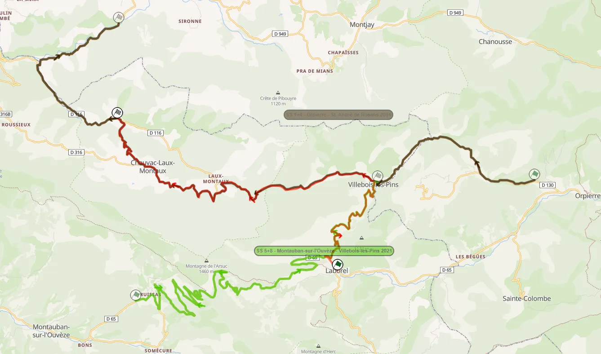
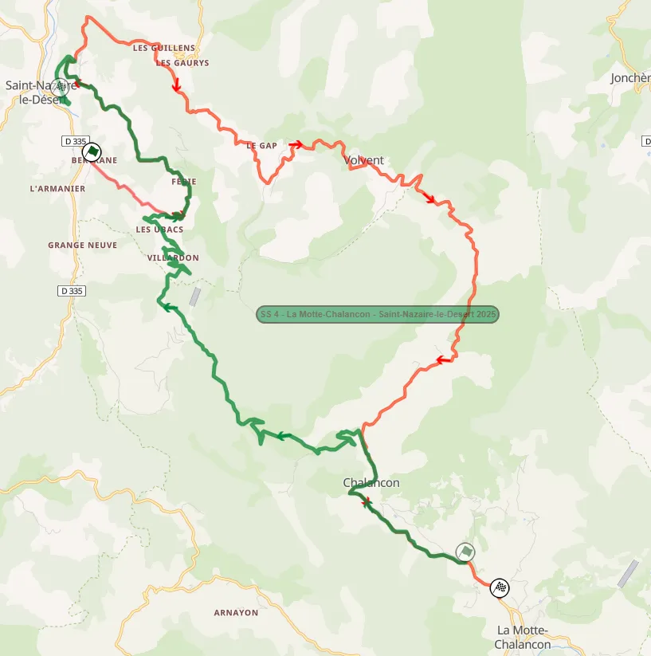
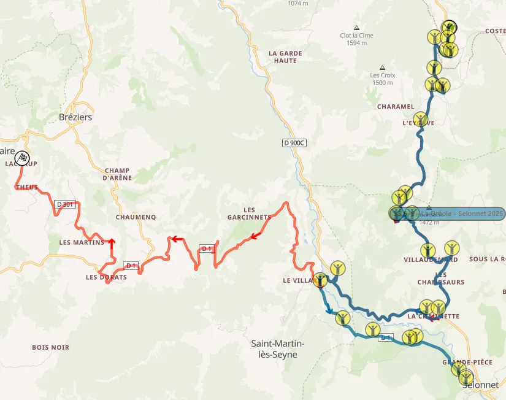
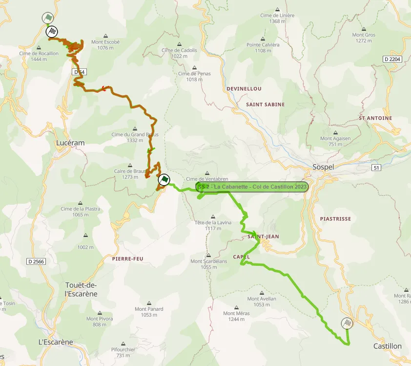
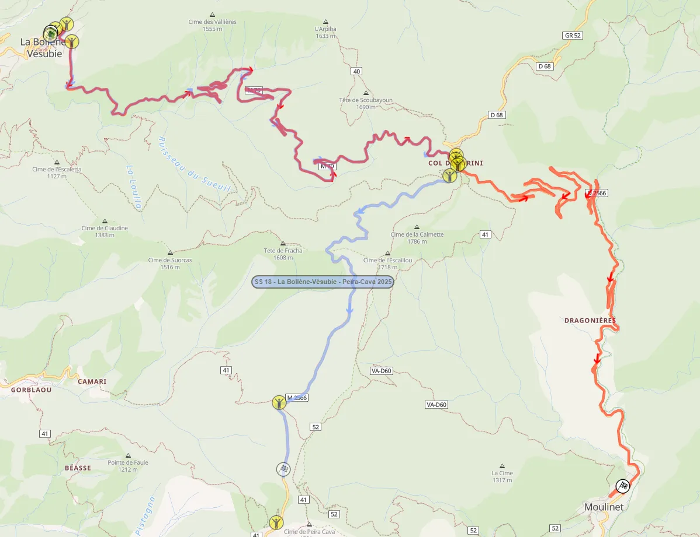

Rally Monte-Carlo 2026: Route Preview
Thumbnail: @ World
Stage Maps: Rally-Maps.com
The 2026 WRC season opener features an exciting new itinerary, with over 70% of the route being new for this year. The event makes its way back to Monte-Carlo from Gap on Saturday now instead of Sunday, with the day capped off by a run of a Super Special in Monaco, which uses parts of the Grand Prix Circuit.
Wednesday
Wednesday only features a run through the pre-event Shakedown in Gap. The route of the stage has been changed slightly compared to previous editions.
Shakedown: Gap - 4.80km
Changes compared to past editions: Compared to 2025, the stage features a new finish and has been stretched out to 4.80km

Stage description: This year's Shakedown is generally fast, with some tight sections spread out, while being narrow to its entirety. It's a lot faster than the stages that will be used in the actual rally. The new finish of the test is after a sequence of tight corners, followed by a long straight.
Thursday
Just like last year, the first day of action is comprised of the Ceremonial Start in Casino Square, and three night stages, with the crews making their way from Monte-Carlo to Gap. At 60.76km, this is the rally's shortest day. All three of the day's stages are new compared to 2025, presenting an added challenge for all competitors.
SS1 Toudon - Saint-Antonin - 21.90km
Changes compared to past editions: An old Monte-Carlo stage makes its return to the itinerary. The stage was last used under a similar configuration and direction back in 2005. The section from Rourebel to Saint-Antonin was used in the same direction as recently as 2023 and 2022. Francois Duval had a big accident here in 2005, on his Citroen debut.

This year's stage (red), compared to the 2023 Puget-Théniers - Saint-Antonin stage (green)
Stage description: The stage starts on a quite twisty road, and almost immediately has a narrow passage through the village of Toudon. It continues to be twisty and technical after that, and at 4km there's a very narrow pass where the road carves its way next to the mountain with steep drops on the other side.
Following that section, it becomes slightly wider, but remains twisty and technical. At 12.2km there's another narrow pass through the village of Ascros, after which the stage turns downhill, with a nice series of downhill hairpins at 13.6km. After yet another narrow pass through the village of Rourebell, the surface becomes quite broken.
At 15.58km, the stage joins another narrow road, which is faster, but still narrow and broken. After the village of Saint-Antonin, the route becomes sinuous, with many slow-speed corners and hairpins, and reaches its conclusion shortly after.
Onboard that shows most of SS1
SS2 Esclangon - Seyne-les-Alpes - 23.48km
Changes compared to past editions: The stage has only been used thrice before, in 1977, 1983 and 2016. Compared to 2016, it's slightly extended from the start.
Just like 2016, it will be run in the dark, as the second stage of the event.

This year's stage (red), compared to the 2016 Barles - Seyne stage (blue)
Stage description: The start of the stage is on a medium-wide and flowing road, which quickly becomes more broken, with stone walls on the side of the road. At 2.67km there's a beautiful section where the stage passes over a river on a stone bridge, and then continues onto a tunnel carved into the mountainside.
Upon exiting, the road becomes narrow, with the mountain on one side and a stone wall on the other. It then widens momentarily as it reaches the route of the 2016 stage.
At 5km, the route passes next to a gorge, with the road being carved through the mountainside.
Following that, it continues to be fast and flowing, also passing through a tunnel at 8.95km, before continuing past the village of Barles. After the village, it becomes more technical, with long, medium-speed, and slower corners. At 12.65km, it turns off that road and joins a bumpier one, which is more technical and also a bit narrower, but still quite fast.
The stage reaches an altitude of 1600m, and at about the 18km mark, it becomes slower, with more tight corners and hairpins appearing, also turning downhill. The sinuous descent down the mountain was very icy back in 2016.
Onboard of the 2016 Barles - Seyne stage. It includes the last 20.3km of the 2026 test
SS3/11 Vaumeilh - Claret - 15.06km
Changes compared to past editions: Identical to the Vaumeilh - Claret stage, which was used for the first and last time in 2018. The stage will be used both on Thursday night and also on Saturday.
Onboard of the Vaumeilh - Claret stage
Stage description: The start is on a narrow road, which is quite broken and patchy, but also very fast. It is initially next to fields on a mostly flat surface, but quickly climbs uphill. At 2.16km, the stage becomes twisty, with a series of slow technical corners and hairpins, before a passage through the village of Sigoyer.
Shortly after, the route becomes faster, joining a fast road at 4.62km, which is quite worn and bumpy. Following a flat-out section, the stage becomes more technical, with slow and medium speed corners appearing. At 9.5km, it turns off that road and moves onto a smoother one, with a flat-out section ensuing, with small crests.
After that, the stage turns downhill and also becomes more technical, with a series of hairpins at 12km. The rest is slow and technical in general, apart from a flat-out section from 12.5 to 13.6km.
Vaumeilh - Claret was the fastest stage of the event in 2018.
The flat-out section after the village of Sigoyer
Friday
Friday is the longest day of the rally at 128.88km. It features two runs of three stages, two of which were part of the rally on Saturday last year.
At 29km, Saint-Nazaire-le-Désert - La Motte-Chalancon is the longest stage of the day, and features a new route compared to last year. La-Bâtie-des-Fontes - Aspremont is in an identical configuration as 2025, and Laborel - Chauvac-Laux-Montaux uses sections of the 2019 Roussieux - Laborel test, only in reverse.
SS4/7 Laborel - Chauvac-Laux-Montaux - 17.95km
Changes compared to past editions: Essentially a new stage. Parts of SS4/7 have been used many times in the past, with the start being last used in 2021, as part of the Montauban-sur-l'Ouvèze - Villebois-les-Pins stage. This year's configuration is essentially a combination of the aforementioned 2021 stage, and the 2014 Orpierre - St. André de Rosans stage.
Gigi Galli had an accident on this stage back in 2004, and Thierry Neuville crashed on his Hyundai debut here in 2014.

SS4/7 (red), compared to the 2021 Montauban-sur-l'Ouvèze - Villebois-les-Pins (green) and the 2014 Orpierre - St. André de Rosans (brown) stages
Stage description: After a big straight, the stage joins a technical and twisty section, which is mostly comprised of tight corners and hairpins, but also has a nice fast section at 4km. It is initially uphill, before turning downhill. After a passage through Villebois-les-Pins, it turns onto a different road, which is initially narrower, via a tight junction after a bridge.
The second part of this stage is on this onboard from 3:40 onwards
This new road is generally fast, featuring high-speed sections while having mostly fast/medium speed corners, and also a crest as the stage passes the Col du Reychasset at 9.3km. Following that, it becomes more technical, and has sections of long, medium speed and slow corners, with the road surface becoming bumpier.
The road narrows at 15.4km, continuing from a high-speed section from the village of Chauvac, before it becomes twisty. Despite its twisty character and numerous downhill hairpins, the stage remains high-speed, with fast sections joined together by these hairpins. The finish of the stage is at the end of this section.
The downhill hairpin section near the end of the stage
SS5/8 Saint-Nazaire-le-Désert - La Motte-Chalancon - 28.70km
Changes compared to past editions: Compared to the stage used in 2025, only the first 6.73km are used in the same direction, with the stage's last 4.66km also used last year, only in reverse. The middle part of the test, which passes next to the village of Volvent, has not been used in the WRC since 2013!
Last year, Gregoire Munster got his maiden stage win on this stage, albeit with a different configuration.

Saint-Nazaire-le-Désert (red) compared to last year's test (green)
Stage description: The start of the stage is on a narrow but smooth surface, and is mostly twisty, first climbing uphill, before then going downhill. At 6.67km, the stage leaves this road and joins a slightly wider one, which is bumpier and generally fast. At 10.43km, it becomes twisty as it passes through the Col du Portail and climbs uphill, with many long and winding corners.
At 15.8km, the stage passes through the village of Volvent, after which the road becomes narrower and also more worn. The stage itself remains the same character-wise, being technical with some short, faster sections. At 20km the stage turns downhill again.
Following a series of downhill hairpins at 24km, the stage joins the route of last year's La Motte-Chalancon test, only in reverse. Shortly after, a very narrow pass follows, after which the stage becomes faster, with a quick passage through the village of Chalancon.
The end of the stage is faster and more flowing, on a generally smoother and wider surface.
SS6/9 La-Bâtie-des-Fontes - Aspremont - 17.79km
Changes compared to past editions: Identical to last year's La-Bâtie-des-Fontes - Aspremont stage. In 2021, Sebastien Ogier got a puncture and spun from the lead, and Kalle Rovanpera also spun on the second pass.
Stage description: The start of the stage is generally fast, but also featuring hairpins and slow corners, climbing uphill. The section from 8km to roughly 8.7km is noteworthy, with the stage passing next to a gorge, with the road having a cliff face on one side, and a stone wall on the other.
After that, it passes through a village, with the next section being flat out in an open valley. It remains the same until the finish, with many high-speed sections on a medium-wide road, with the exception of a more twisty sequence at 14.23km.
Saturday
Saturday is actually a quite short day, with just three proper stages. It features only one repeated test, La Bréole / Bellaffaire, which is also the longest of the rally at 29.93km. The crews will make their way from Gap to Monte-Carlo, with the day's final stage being a Super Special in Monaco, something that has not happened since 2008!
On the way back to Monaco, Vaumeilh-Claret will be used for a second time.
SS10/12 La Bréole - Bellaffaire - 29.93km
Changes compared to past editions: La Bréole - Bellaffaire is a mix of last year's La Bréole - Selonnet stage, and the older Turriers test. For the first time since 2014, Col des Garcinets, a section used by teams for pre-event testing, will be included in the rally proper.

The new look La Bréole - Bellaffaire (red) compared to last year's La Bréole - Selonnet (blue)
Stage description: The first part of the stage is on a fast, narrow and broken road with small crests, initially in a forest. It then becomes more technical, and after a flat-out section, the stage arrives at a junction that’s been turned into a chicane and turns onto a new road. This new road is wider and more flowing, running alongside older stone walls in parts.
At 14km, the stage turns away from the 2025 route, and continues onto a bumpy and worn road, carved next to the rockface, with a big drop on the other side. It then continues downhill in a forested area, on a fast and bumpy section, with flowing corners.
At 19.1km, it turns uphill again, as it approaches Col des Garcinets, where the landscape changes to empty and rocky momentarily, before the stage re-enters the forest, heading downhill.
After that, the route continues onto a section that we've seen used in Bayons-Breziers, only in the opposite direction. The stage becomes narrower, using a worn road that goes around an open area with fields. It's generally quite fast, with some short twisty sections as well.
SSS13 Monaco Circuit - 2.69km
Changes compared to past editions: The SSS is held in Monte-Carlo, and uses parts of the Monaco Grand Prix Circuit. It's the first time since 2008 that the Monaco Circuit features in the WRC. This year's SSS is in a similar configuration to the ones from 2007 and 2008, but will be run in the dark, just like in 1997.
Chris Atkinson had a battle with Mikko Hirvonen and Francois Duval on this stage in 2007 and 2008. Conrad Rautenbach had an accident here in 2008.
Stage description: The stage starts from Rascasse, before continuing onto the circuit's start/finish straight, and onto St Devote. The cars will then not continue up to Beau Rivage, and will instead continue downhill, taking a shortcut which leads them to Tabac.
At the exit of the swimming pool section, the cars will run deep compared to the F1 layout, before making their way onto a donut. After a second lap, the finish of the stage will be on the approach to Rascasse.
Sunday
Sunday is comprised fully of stages around the principality. Both of the day's stages are classics. Col de Braus will be used again after a three-year break, used in this direction for the first time since 2006. Col de Turini will be the rally's Wolf Power Stage, with the finish returning to Moulinet for the first time since 2022.
SS14/16 Col de Braus - La Cabanette - 12.50km
Changes compared to past editions: Col de Braus' famous hairpins return to the Monte Carlo Rally's itinerary for the first time since 2023, where it was part of the La Cabanette - Col de Castillon stage. It has not been run in this direction in the WRC for many years; in fact, the last time competitors tackled it this way, was back in 2006.
Sebastien Loeb had an off here in 2020, and Nicolas Vuilloz's crash in 2004 caused the stage to be cancelled.

This year's Col de Braus (red) compared to 2023's La Cabanette - Col de Castillon (green)
Stage description: The stage starts off on a medium-wide road, which climbs uphill, with many hairpins, on a mostly smooth surface. As the route continues up the mountain, the road surface becomes broken and also narrower, with hairpins being replaced by technical slow corners.
From Col de l'Able onwards, the stage is generally quite fast, going downhill, with the road surface being worn and broken in places, especially as the stage nears La Cabannette. There's a sequence of consecutive hairpins at 6.3km.
At 7.7km, the stage turns onto a wide and smooth road, which is full of uphill hairpins, with the finish of the stage located at this section's end.
SS15/17 La Bollène-Vésubie - Moulinet - 23.45km
Changes compared to past editions: This year's version of the Col de Turini stage won't see the rally finish on top of the Col like 2023 and 2024, nor in Peira Cava like last year. Instead, the stage will finish in Moulinet, in what is considered this stage's "original" configuration.
This is the longest Monte-Carlo Rally Power Stage, and the longest final stage since 2006's La Bollène-Vésubie - Sospel.
Too many things have happened in this legendary stage over the years, and you can learn more by checking out the Top 30 WRC Stages of all-time series, which was done in collaboration with Antti from It Gets Faster Now!

This year's Col de Turini (red) compared to last year's configuration (blue)
Stage description: The section from La Bollène-Vésubie to the approach to the Col is fast and flowing, including a pass through the tunnels near La Bollène at 1.7km, with the fast and flowing nature of the stage interrupted by a series of hairpins at 3km, after which it becomes more twisty until about the 12km mark.
The stage reaches the top of the Col at 12km, and then continues straight, on a downhill road which leads to Moulinet. The road becomes sinuous, with many slow corners and hairpins, which can be especially tricky when there's snow and ice on the road.
The end of the stage is slightly quicker, with the road being flowing, with stone walls on the edge of the road.
What I would change
My wish of the Power Stage ending in Moulinet from last year was granted, so I am quite happy! Overall, I am content with this year's Monte-Carlo itinerary, but I still have some things that I would change. Firstly, I would replace Toudon - Saint-Antonin with the Sigale - Col de Bleine stage, which includes the famous Aiglun tunnel section. This stage has not been used since 2006, and is something that I'd love to see back in the WRC.
Another change I would make is that I would replace La-Bâtie-des-Fontes - Aspremont with last year's Aucelon - Recoubeau-Jansac, which I quite liked, even though some of the nicer sections were removed. In fact, I am not a massive fan of Friday's stages, I would prefer a mix of stages to the northeast of Gap, something like Agnières-en-Dévoluy, Corps and Saint-Léger-les-Mélèzes.
I would also replace Vaumeilh - Claret with Sisteron - Thoard or St Geniez - Thoard, with Esclangon - Seyne-les-Alpes becoming the loop's final stage on Thursday.


Comments